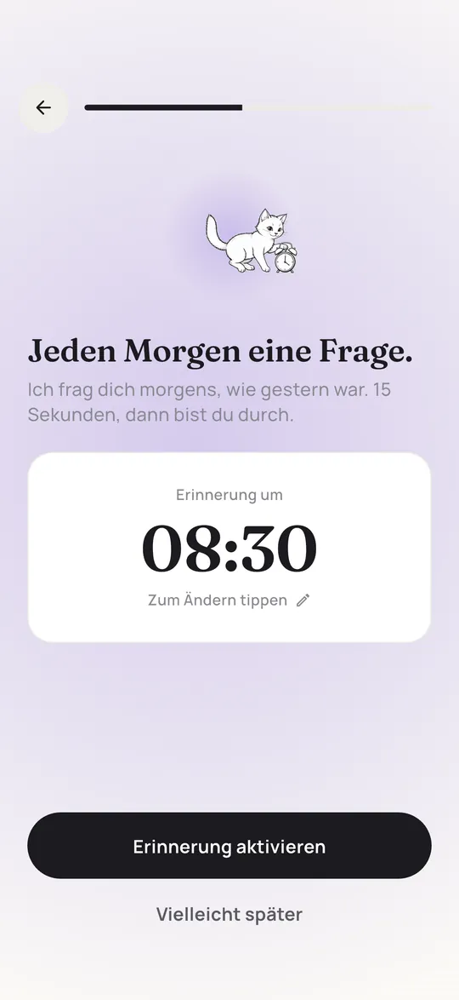
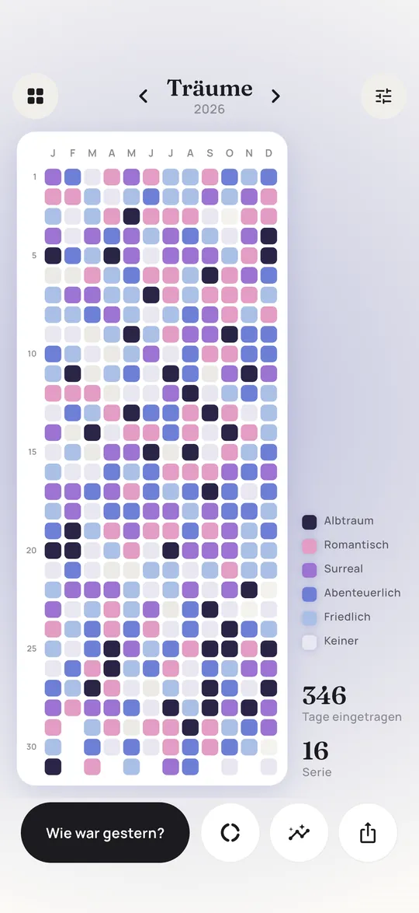
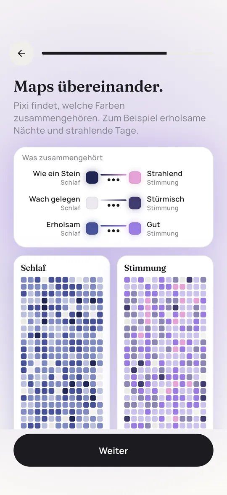
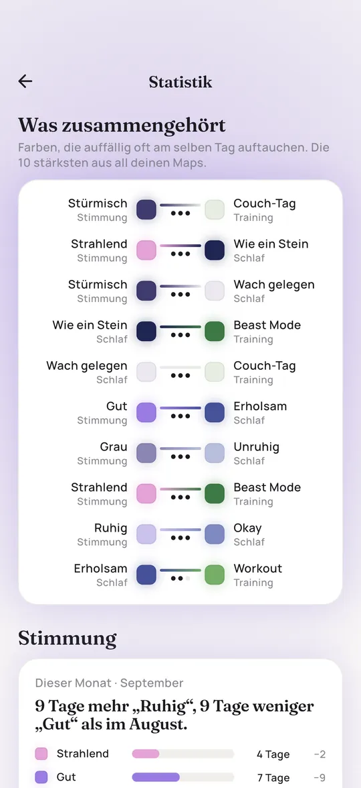
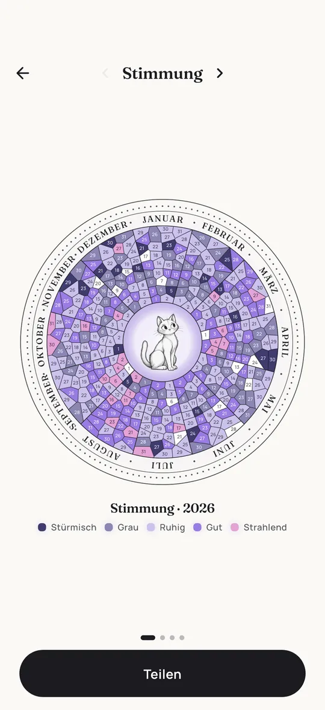
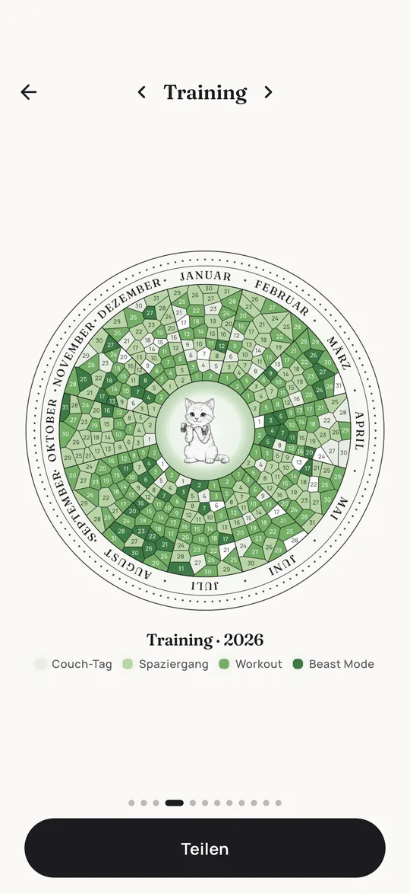
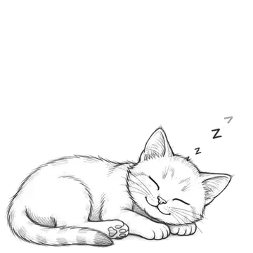

Dein Jahr in Pixeln, jeden Tag eine Farbe.
Pixi ist ein Mood Tracker fürs iPhone. Jeden Morgen fragt dich eine kleine gezeichnete Katze, wie gestern war. Du tippst eine Farbe an, und Woche für Woche wird aus deinen Tagen ein leuchtendes Bild von deinem Jahr.
Monatsabo mit 7 Tagen gratis oder Einmalkauf.
Fürs iPhone, Android ist geplant.


Ein Jahr voller Morgen: 365 Mal tippen, ein Bild. Das hier ist ein Beispiel. Deins sieht aus wie dein Jahr.
- Stürmisch
- Grau
- Ruhig
- Gut
- Strahlend
So läuft ein Tag mit Pixi
Es dauert etwa 15 Sekunden. Kein Schreiben, keine leere Seite, kein Druck, etwas Kluges formulieren zu müssen.

1Die Frage am Morgen
Du wählst eine Uhrzeit, Pixi erinnert dich jeden Morgen einmal. Die Frage bezieht sich immer auf gestern, der Tag ist also schon komplett.
 2
2Farbe antippen
Fünf Farben, von Stürmisch bis Strahlend. Einmal tippen, fertig. Einen Tag verpasst? Einfach später nachtragen.

3Zusehen, wie das Bild wächst
Jede Antwort wird ein Pixel in einem Raster aus 12 Monaten und 31 Tagen. Nach ein paar Wochen zeigen sich Muster ganz von selbst.
Mehr als nur Stimmung
In Pixi bekommt jede Frage ihre eigene Map. Starte mit einer der 16 Vorlagen oder baue deine eigene. Jede Vorlage hat Farben, die schon zusammenpassen.
- StimmungWie war deine Stimmung?Stürmisch bis Strahlend
- GeweintHast du geweint?Trocken bis Wasserfall
- AnspannungWie angespannt warst du?Tiefenentspannt bis Panik
- SozialesWie viel warst du unter Leuten?Me-Time bis Unter Leuten
- DankbarGab es etwas, wofür du dankbar warst?Nicht heute bis Sehr dankbar
- TräumeHast du geträumt?Keiner bis Albtraum
- SchlafWie hast du geschlafen?Wach gelegen bis Wie ein Stein
- EnergieWie viel Energie hattest du?Akku leer bis Aufgedreht
- PeriodePeriode?Keine bis Stark
- SchmerzenHattest du Schmerzen?Schmerzfrei bis Heftig
- TrainingHast du trainiert?Couch-Tag bis Beast Mode
- AlkoholHast du Alkohol getrunken?Nüchtern bis Kater-Garantie
- MeditationHast du meditiert?Nicht heute bis Tief versunken
- LesenHast du gelesen?Nichts bis Versunken
- BildschirmzeitWie viel Bildschirmzeit?Digital Detox bis Doomscrolling
- WasserGenug getrunken?Ausgedörrt bis Gut getrunken

Oder deine eigene Map. Schreib deine eigene Frage für den Morgen, wähle eine Grundfarbe und lege deine Stufen fest. Kaffee, Migräne, Sonne, Zeit draußen: Was du mit einem Tippen beantworten kannst, kann Pixi malen.
Sieh, was zusammengehört
Pixi legt deine Maps übereinander und zeigt, welche Farben auffällig oft am selben Tag auftauchen. Erholsame Nächte und strahlende Tage. Couch-Tage und stürmische Stimmung.
Dazu vergleicht Pixi diesen Monat mit dem letzten und zeigt, was an bestimmten Wochentagen auffällt. Muster sind kein Beweis, aber ein guter Anfang, um dir bessere Fragen zu stellen.


Dein Jahr als Poster
Jede Map wird auf Wunsch zu einem runden Jahresrad mit Pixi in der Mitte, ein Ring aus Kacheln pro Monat. Teile es als Bild oder drucke es für die Wand aus.


Privat von Anfang an
Kein Konto
Deine Einträge liegen nur auf deinem iPhone. Es gibt keinen Login und keinen Server mit deinen Maps.
Keine Werbung
Pixi zeigt keine Werbung. Wir nutzen anonyme Nutzungsstatistiken, um die App zu verbessern, aber nie deine Einträge. Käufe laufen über Apple.
Jederzeit exportieren
In den Einstellungen kannst du jederzeit eine Kopie deiner Daten erstellen. Sie gehören dir.
Pixi Premium
Pixi Premium schaltet die ganze App frei. Starte mit 7 Tagen kostenlosem Test im Monatsabo oder zahle einmal und behalte Pixi für immer.
Monatlich
7 Tage kostenlos, danach monatlich
- Unbegrenzt Maps
- Alle Vorlagen und eigene Maps
- Erinnerung am Morgen
- Statistiken und Zusammenhänge über alle Maps
- Jahresrad und Poster
- Jederzeit in deinem Apple Account kündbar
Für immer
Einmal zahlen, für immer behalten
- Alles aus dem Monatsabo
- Eine Zahlung, kein Abo
- Unterstützt eine kleine Katze
Die Preise siehst du im App Store in deiner Währung. Das Monatsabo verlängert sich automatisch, bis du es in den Einstellungen deines Apple Accounts kündigst.
Ratgeber
Lieber auf Papier, oder Ideen für dein eigenes Raster gesucht? Diese Ratgeber funktionieren mit und ohne App.
Fragen und Antworten
Was ist ein Jahr in Pixeln?
Ein Jahr in Pixeln (englisch Year in Pixels) ist ein Raster mit einem kleinen Kästchen für jeden Tag des Jahres. Du färbst jedes Kästchen danach ein, wie der Tag war, meistens nach deiner Stimmung. Nach ein paar Monaten siehst du dein ganzes Jahr auf einen Blick. Die Idee stammt aus dem Bullet Journal, Pixi ist die App dazu.
Ist Pixi kostenlos?
Der Download ist kostenlos. Zum Nutzen brauchst du Pixi Premium, das die ganze App freischaltet: unbegrenzt Maps, alle Vorlagen, die Erinnerung am Morgen, Statistiken und Zusammenhänge, das Jahresrad und das Poster. Starte mit 7 Tagen kostenlosem Test im Monatsabo oder zahle einmal und behalte Pixi für immer. Die Vorlagen zum Ausdrucken auf dieser Website sind kostenlos.
Gibt es Pixi für Android?
Noch nicht. Pixi gibt es für das iPhone im App Store. Eine Android-Version ist geplant.
Wo werden meine Daten gespeichert?
Nur auf deinem iPhone. Pixi hat kein Konto und keinen Server, der deine Einträge speichert. In den Einstellungen kannst du jederzeit eine Kopie exportieren.
Kann ich einen vergessenen Tag nachtragen?
Ja, verpasste Tage kannst du später nachtragen. Die Frage am Morgen bezieht sich immer auf gestern, du bewertest also nie einen Tag, der noch nicht vorbei ist.
Kann ich mehr als meine Stimmung tracken?
Ja. Es gibt Vorlagen für Schlaf, Träume, Energie, Periode, Schmerzen, Training, Alkohol, Meditation, Lesen, Wasser, Bildschirmzeit, Dankbarkeit und mehr. Du kannst auch eine eigene Map mit eigener Frage, eigenen Farben und Stufen anlegen.
Ist Pixi eine Therapie-App?
Nein. Pixi ist ein Tagebuch, das dir hilft, Muster zu sehen. Die App stellt keine Diagnosen und ersetzt keine professionelle Hilfe. Wenn es dir schlecht geht, sprich bitte mit deiner Ärztin, deinem Arzt oder einer Psychotherapeutin.
Gebaut von Caspar
Hi, ich bin Caspar, Indie-Entwickler aus Berlin. Ich baue Pixi allein und lese jede Nachricht. Wenn dir etwas fehlt oder etwas nicht funktioniert, schreib mir auf X (@casparbuilds) oder per E-Mail.

Du musst nicht auf Januar warten
Dein Raster beginnt an dem Tag, an dem du anfängst. Morgen früh eine Frage, eine Farbe, und der erste Pixel ist da.
Im App Store laden